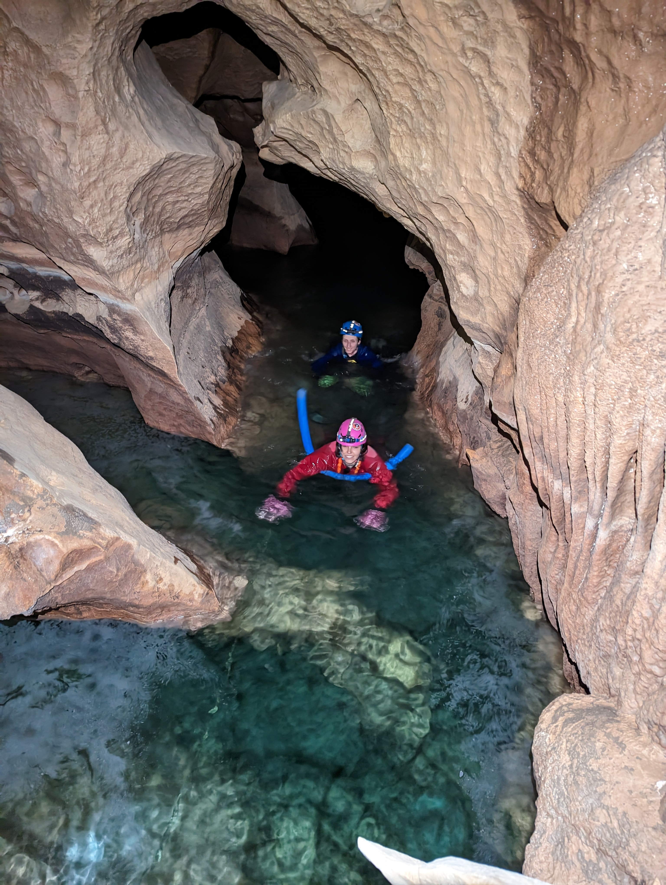
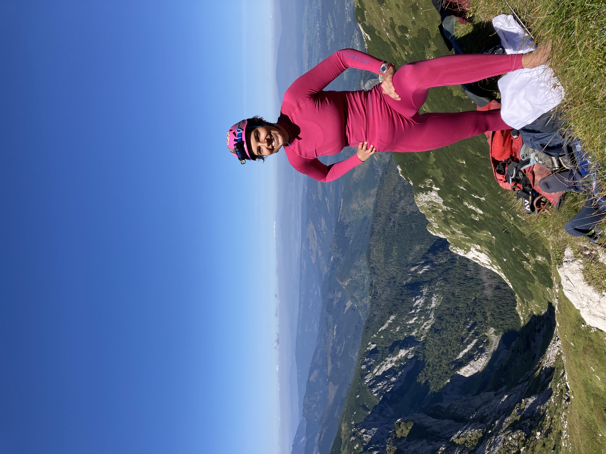

I'm a sports and outdoor activities enthusiast. I actively do rock climbing, alpine caving, mountaineering, and canyoning. Below is a list of my outdoor activities since the beginning of 2023.
Find me on 8a.nu.




| Index | Trip | Trip Date | Activity | Country | Region | Name | Description | Companionship |
|---|---|---|---|---|---|---|---|---|
| 42 | Climbing Holidays | 2025.04.28 - 2025.05.04 | Climbing | Poland | Sokoliki, Rudawy | Sukiennice, Husyckie, Skała nad Bobren | Climbing holidays in my favorite region. | Radost |
| 41 | Easter Trip | 2025.04.20 | Climbing | Poland | Tatry | Dolina Lejowa | Chill Easter sport climbing. | Radost |
| 40 | Easter Trip | 2025.04.10 | Caving | Poland | Tatry | Jaskinia Czarna | Short traverse (1 -> 2), 3h inside with a chill pace. Rappel down with a view. | Radost |
| 39 | Climbing Trip | 2025.03.30 | Climbing | Poland | Kusięta | Zielona Góra | Los Invalidos | Radost |
| 38 | Climbing Trip | 2025.02.22 | Climbing | Poland | Kusięta | Kowadło | Sierp | Radost |
| 37 | Climbing Trip | 2024.09.21 | Climbing | Poland | Kielce | Zelejowa | Cieć w rakach VI (Kamieniołom 3) | Radost |
| 36 | Climbing Trip | 2024.08.17 | Climbing | Poland | Jura Płn | Boniek | Chill sport climbing. | Radost, Marion, Marcel, Łukasz, Zosia, Paweł, Antek |
| 35 | Climbing Holidays | 2024.06.16 - 2024.06.22 | Climbing | Poland | Sokoliki | Sukiennice / Zisperowa | Climbing holidays in my favorite region. | Radost |
| 34 | Pierwsza Jaskinia (SW) | 2024.06.15 | Caving | Poland | Jura Płn | Jaskinia Towarna i Dzwonnica / Jaskinia Maurycego | Very short non-rope caves, Maurycego is gated. | Karolina, Marek, Konrad, Ania + newbies |
| 33 | CUCC in the Tatras | 2024.01.10 | Mountaineering | Poland | Tatry | Grześ | Long hike from Dolina Kościeliska through Droga nad Reglami. | Harry, Wookey, Radost |
| 32 | CUCC in the Tatras | 2024.01.09 | Mountaineering | Poland | Tatry | Ornak | Winter Ornak ascent. 8h in total. | Harry, Wookey, Radost, Marek |
| 31 | CUCC in the Tatras | 2024.01.07 | Caving | Poland | Tatry | Jaskinia Czarna | Classic through-trip, 7 people & 7 hours inside. | Harry, Wookey, Wassil, Radost, Marek, Stasiek |
| 30 | Rock Climbing Trip with Kilimanjaro | 2023.11.19 - 2023.11.24 | Climbing | Spain | Costa Blanca | Sierra de Toix (Toix Far Oeste, Tropical Dreams), Font D'Aixa (Izquierda) | Single- and multi-pitch sport routes, single-pitch trad routes. Trad routes graded IV-ish. | Radost, Waldek, Paweł, Adam |
| 29 | Summer Boot Camp with Speleoklub Warszawski | 2023.09.09 | Caving | Poland | Tatry | Jaskinia Wielka Śnieżna | Nylon highway, entrance to the bottom of Wielka Studnia and back, ~4-5h underground. It's the deepest cave in Poland (1km) but we didn't go very far. Wielka Studnia is a spectacular 80m pitch. Prussiking up it with a tackle sack full of 100m rope for Płytowiec was tiring. Approach through Dolina Małej Łąki. Total time: 8:00 -- 21:00. | Radost, Ania, Ania, Asia, Wiktoria |
| 28 | Summer Boot Camp with Speleoklub Warszawski | 2023.09.08 | Caving | Poland | Tatry | Jaskinia Wielka Litworowa | Nylon highway, entrance to the bottom of II Piędziesiątka and back, ~6h underground. Rigging was mostly done by me. Trawers Nad Studnią Flacha was fun to rig. Approach through Skoruśniak. Total time: 7:30 -- 23:00. | Radost, Ania, Ania, Asia, Wiktoria |
| 27 | Summer Boot Camp with Speleoklub Warszawski | 2023.09.07 | Caving | Poland | Tatry | Jaskinia Czarna | Premiere traverse trip of the Tatras, 9.5h underground. Requires a lot of climbing (easy, grades up to IV+). Climbing and rigging was done mostly by Radost and me. Approach through Dolina Kościeliska, relatively short. Total time: 8:00 -- 22:00. Meeting another group underground caused a 1h delay. | Radost, Tomek, Ania, Ania, Asia, Wiktoria |
| 26 | Summer Boot Camp with Speleoklub Warszawski | 2023.09.05 | Caving | Poland | Tatry | Jaskinia Ptasia Studnia | Nylon highway, entrance to Sala Dantego and back, ~6h underground. Rigging was mostly done by me. Going to Sala Dantego requires a fun swing 2/3 down a pitch. Approach through Adamica, it's the farthest located cave I've been to in the Tatras. Entrance is exposed and requires rigging a pitch and a traverse on the surface. Views at the entrance are spectacular. Total time: 7:40 -- 21:30. | Radost, Tomek, Ania, Ania, Asia, Wiktoria |
| 25 | Summer Boot Camp with Speleoklub Warszawski | 2023.09.04 | Caving | Poland | Tatry | Jaskinia Marmurowa | Nylon highway, entrance to Czarna Baszta and back, ~4-5h underground. First few pitches were drippy after the rain a day earlier. Approach through Adamica. Total time: 8:15 -- 21:00. | Radost, Tomek, Ania, Asia, Wiktoria |
| 24 | Summer Boot Camp with Speleoklub Warszawski | 2023.09.03 | Caving | Poland | Tatry | Jaskinia Pod Wantą | Approach in storm, rain, and hail. Nylon highway, entrance to bottom and back, ~4-5h underground. Rigging was mostly done by me, there is one ~50m pitch. Hike down in rain. Approach through Skoruśniak. Total time: 7:45 -- 21:00. | Radost, Tomek, Ania, Ania, Asia, Wiktoria |
| 23 | Casual Climbing Trip | 2023.08.19 | Climbing | Poland | Kielce | Stokówka | Single-pitch sport climbing. Routes: Święta Brzózka (IV/5a OS) Kalcytowa Płyta (V/5b OS) Zacięcie Stokówki (V+/5c OS) Elwis (VI/6a+ top) |
Radost, Marion |
| 22 | Zillertal Holidays with Parents 2023 | 2023.07.17 | Skiing | Austria | Tirol | Hintertuxer Gletscher | Summer skiing on Hintertuxer Gletscher. Temp at Gefrorene Wand (highest point: 3,288 m) 7 C. Technical skiing on wet, sometimes watery snow. Crevasses are definitely the biggest danger. The slopes are open 8-13 in summer. Me and Hubert also visited the ice showcave in the glacier, air temp 0, water temp subzero (distilled water). | Hubert |
| 20, 21 | CUCC Expedition 2023 | 2023.07.15 | Via Ferrata | Austria | Halstatt | Mein Land, Dein Land + Leadership | Two very easy and uneventful ferratas graded C. Each took us 20 mins. Mein Land, Dein Land starts in a cave. | Oakem, Jonty, Maddie, Evelyn |
| 19 | CUCC Expedition 2023 | 2023.07.13 | Via Ferrata | Austria | Totes Gebirge | Panorama Kletterstieg Sisi | Fun vertical climb, graded D. Lack of aids besides the metal wire makes it enteraining. The description says the route takes 1-2h but we did it in 50 mins with a photo break on a wide ledge 3/4 up. Starts close to the Loseralm parking lot. | Radost, Harry, Oakem, Jonty, Charlotte |
| 18 | CUCC Expedition 2023 | 2023.07.11 | Expedition Caving | Austria | Totes Gebirge | Amphitheather Höhle | Dropping Amphitheather Höhle found earlier by me and Radost. Ash bolted it down the middle of the second pitch while me and Radost surveyed it to the traverse leading to the second pitch (70m down). Ash and Janis returned there on the next day to continue. The lead is dead -- the cave goes but through a dangerous ice boulder choke. 3h plus walking from and to top camp. | Radost, Ash |
| 17 | CUCC Expedition 2023 | 2023.07.10 | Canyoning | Austria | Salzburg | Strubklamm | Very easy and pleasant canyon graded V1A3. Has two bigger jumps (8m and 10m), both can be abseiled but we didn't use ropes except for the pre-rigged handlines of dodgy quality. Has a 300m swimming passage. We did half of the canyon on an inflatable unicorn, taking turns. | Radost, Chi, Ash, Harry |
| 16 | CUCC Expedition 2023 | 2023.07.07 | Expedition Caving | Austria | Totes Gebirge | Fishface (Fischgesicht Höhle) | Pushing deep Fishface at 300m down. We bolted and surveyed 60m of a muddy traverse (called it "European Federalists") which ends in a massive pitch. 11 hour trip plus walking from and to top camp. | Radost, Mike |
| 15 | Eurospeleo 2023 | 2023.05.21 | Caving | Germany | Hessen | Herbstlabyrinth | Beyond showcave towards Nordwest Passage. A muddy crawl through a stony labirinth. We went through a sump (water pumped out), slightly beyond Große Halle. 5h & no SRT. | Radost, German/Dutch people at Eurospeleo |
| 14 | CUCC Ardeche 2023 | 2023.04.07 | Caving | France | Ardeche | Aven Saint Marcel | Aven Despeysse throughtrip which requires a permit (keyed). I was on the rigging party (top to bottom), exchanged with the de-rig group in the middle and had lunch. Navigation is easy due to signs placed by the French. 6h | Radost, Aila, Oakem, Joel |
| 13 | CUCC Ardeche 2023 | 2023.04.06 | Via Ferrata | France | Ardeche | Pont Du Diable | Very easy ferrata graded C. Does not require using upper body. Zip line is fun. Nice views and overall a pleasant rest day activity. 1h | Radost, Alice, Will |
| 12 | CUCC Ardeche 2023 | 2023.04.05 | Canyoning | France | Ardeche | Haute Borne | Cool canyon graded V1A3. Has a multitude of optional jumps and one 8m jump (can be abseiled). Very cold in April -- my neofleece was definitely insufficient. I ended up doing awkward climbs to avoid being in water. 3h | Radost, Brendan, Oakem, Wookey, Marie |
| 11 | CUCC Ardeche 2023 | 2023.04.04 | Caving | France | Ardeche | Event Superieur de Foussoubie | Kitted up, we swam across the river from the hut to the cave. Easy through trip (top to bottom). Some pools at the bottom of the cave and a very drafty entrance. Requires some navigation -- getting lost in very squeezy clay parts with Radost and four tackle sacks was no fun. Earlier, we'd been also faffing for an hour finding the top entrance. 1h to top entrance + 3h inside, including being taught canyoning-style pull throughs by Brendan and getting lost. | Radost, Brendan, Oakem, Nathalie |
| 10 | CUCC Ardeche 2023 | 2023.04.03 | Caving | France | Ardeche | Aven de Noel | Premiere cave of the region, the warmest I've been in (15 C ?) and completely dry, undersuit is probably extensive. Begins with a few vertical pitches, the last one of which is 80m, so one needs to prussik up over 100m on the way back. 5h | Radost, Wassil, Wookey, Brendan, Oakem |
| 9 | CUCC Ardeche 2023 | 2023.04.02 | Caving | France | Ardeche | Midori | Excellent easy wetsuit trip. No need for a boat or rope. The walk to Midroi along the river is really lovely. After the trip, we jumped from the mini cliff and swam in the river. 3-4h | Radost, Harry, Aila, Marie, Oakem |
| 8 | Winter Boot Camp with Speleoklub Warszawski | 2023.03.04 | Caving | Poland | Tatry | Jaskinia Miętusia | Entrance to Błotne Zamki (going approx. 250m deep). The first 100m down are a slide, occasionally covered by ice -- the way up is slightly more tedious. Later requires a lot of rigging. We headed back at Ściana Męczenników (Suferer's Wall). Overall a very enjoyable cave. 6h ? | Radost, Tomek, Wiktoria, Artur |
| 7 | Winter Boot Camp with Speleoklub Warszawski | 2023.03.03 | Caving | Poland | Tatry | Jaskinia Kaspowa Niżna | Entrance to Złota Kaczka (Golden Duck). Easy cave and easy approach (does not require exstensive hiking). Only accessible in winder as a streamway goes through in summer. I did a fun mini climb (Prożek ?) and rigged a traverse on the way up. 6h ? | Radost, Tomek, Wiktoria, Artur |
| 6 | Winter Boot Camp with Speleoklub Warszawski | 2023.03.02 | Caving | Poland | Tatry | Jaskinia Czarna | Top entrance to Partie Królewskie. Good slab climbing (and rigging on the way up) in Komin Węgierski. Boot Camp which took 12h underground. I was the first one prussiking up and the rope was icy -- turns out jammers don't work then and I had to prussik up on prussik knots which was stressful. The approach requires walking on steep terrain beyond trails. We left the hut at 7 AM and came back at 2 AM the next day. Wearing crampons for the hike down was sensible. | Radost, Tomek, Wiktoria, Artur |
| 5 | CUCC New Year 2023 at RRCPC | 2022.12.31 | Caving | UK | Yorkshire | Lost Johns to Nots II | Excelent trip. The way down Lost Johns is very enjoyable, the Battleaxe Traverse is fun, and the waterfall at the bottom stunning. The two caves are connected by a man-dig which took us under 1h to go through. Connection requires some routefinding. The entire trip took us 5-6h in total but we were speedy, on a rigging party. Definitely a wetsuit trip. Sliding in Nots II is very nice after crawling through the man-dig. One of my favourite Dales trips so far. | Radost, Charlie, Aila, Todd, Janis |
| 4 | CUCC New Year 2023 at RRCPC | 2022.12.30 | Caving | UK | Yorkshire | Cow Pot | Cow Pot to Lancaster Hole. Pleasant and chill rest day walk, but me and Radost went to Aardwark by accident -- the obvious way leads there. Aardwark is a horrible technical, squeezy rift. We turned back after 1h there. | Radost |
| 3 | CUCC New Year 2023 at RRCPC | 2022.12.29 | Caving | UK | Yorkshire | Gaping Gill | Easy trip (entrance through Bar Pot), I rigged and derigged. We went to the waterfall and back. The walk to the cave is approx. 1h, we spent maybe 4h inside. | Oakem, Nathalie, Paul |
| 2 | CUCC New Year 2023 at RRCPC | 2022.12.28 | Caving | UK | Yorkshire | County to Lancaster Hole | Approx. 3h (brisk pace) pleasant no SRT trip which requires some route finding skills. | Radost, Charlie, Anthony |
| 1 | CUCC New Year 2023 at RRCPC | 2022.12.27 | Caving | UK | Yorkshire | Aquamole | Completely vertical all the way down to the sump. We went there as Aquamole is supposed to be okay in rainy weather. There was significantly much more water on the way up than on the way down and we were very cold. I was shivering while derigging (it would've been much nicer in a wetsuit). Charlie knocked down the scaff bar at the entrance while going out and it hit Aila on the foot. Luckily, a more serious accident was avoided. | Radost, Aila, Charlie |